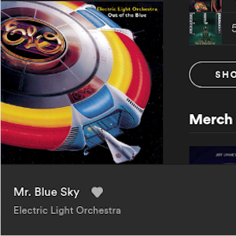
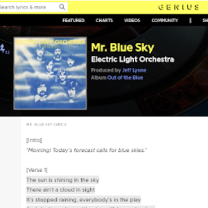

How Adepto Works
-

Start by playing any track on Spotify.
-

Click the extension icon to the right of the address bar.
-

After a few seconds, a list of Genius results will show up.
-

Click on any of the results to open it in a new tab.